NAVALUENGA · UNA EXPERIENCIA
UN LUJO ENNAVALUENGA
El paisaje se descubre. El vino se disfruta.

NAVALUENGA · UNA EXPERIENCIA
El paisaje se descubre. El vino se disfruta.
EL ORIGEN
Navaluenga. Un lugar para detenerse, mirar y disfrutar.
LA UVA
Garnacha
Acércate a la variedad que da forma a esta botella.
LOS MATICES · EN NARIZ
Haz una pausa. Descubre lo que aparece en la copa.
LOS MATICES · EN BOCA
La experiencia continúa en cada sorbo.
EL VINO
Ladera · Garnacha 2023
Elige tu formatoPrecio y disponibilidad pendientes de conexión.
¿Prefieres descubrirlo aquí?
Reserva una cata →UNA INVITACIÓN A LA CATA
El vino, su historia y el placer de compartirlo.